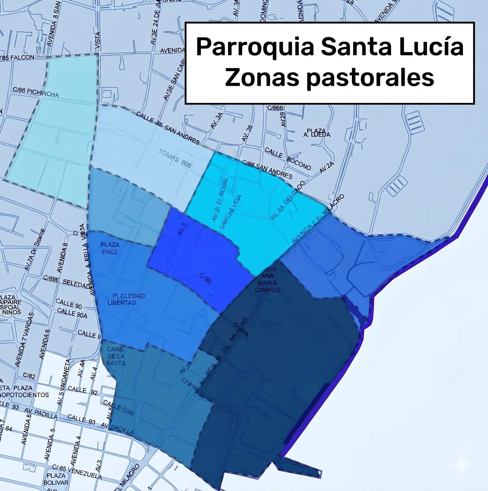
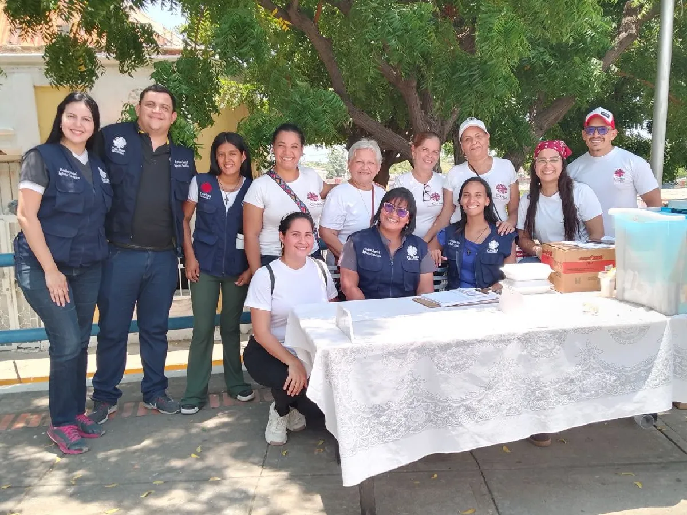
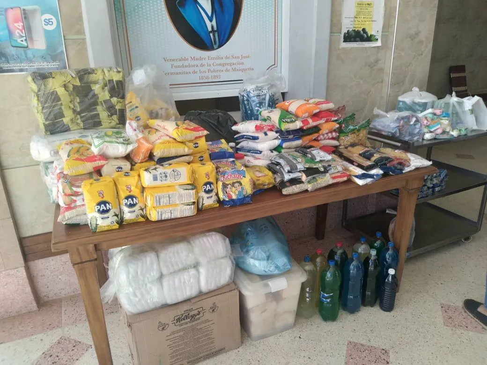
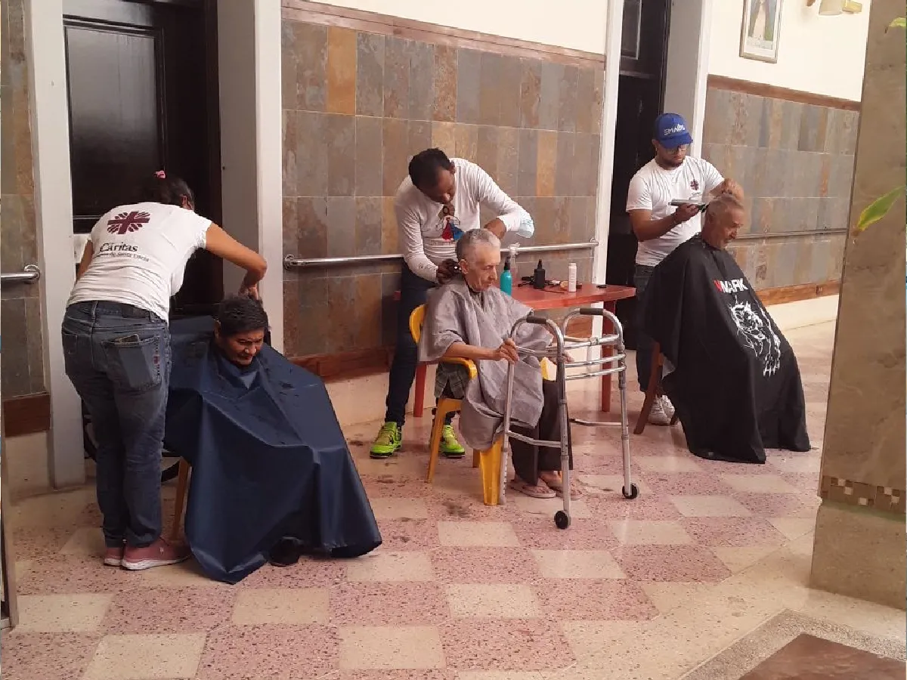
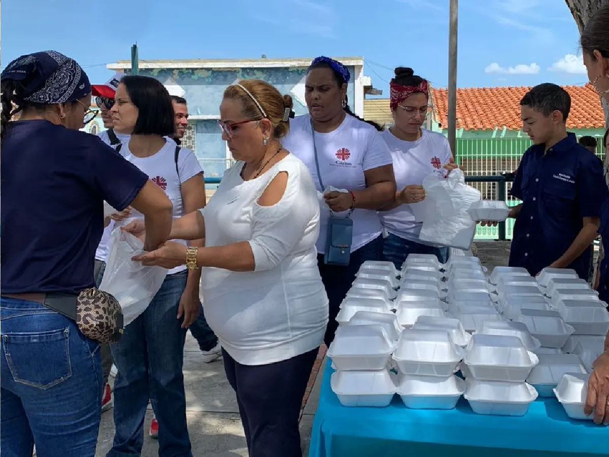

Catequesis
Niños, jóvenes y adultos
Preparación a la Primera Comunión y a la Confirmación. Las Confirmaciones se celebran en Pentecostés y las Primeras Comuniones en Corpus Christi.
Un solo cuerpo, muchos carismas. Encuentra tu lugar en la familia de Santa Lucía.
Un itinerario de formación católica para redescubrir el Bautismo, vivido en pequeñas comunidades a la luz de la Palabra.
Conoce más →Custodios de la tradición y la piedad popular. Devoción hecha cultura y hermandad.
Conoce más →Un encuentro vivencial con lo fundamental cristiano para fermentar de Evangelio los ambientes.
Conoce más →Retiro y camino para jóvenes. Un encuentro personal y transformador con Cristo resucitado.
Conoce más →Oración y apostolado bajo el estandarte de la Virgen. Santificación personal y misión.
Conoce más →Un movimiento de renovación en el Espíritu Santo: alabanza, oración y vida en los dones de Pentecostés.
Fieles dedicados a la devoción, oración y propagación del mensaje de la insondable misericordia de Dios.
Conoce más →Devoción mariana enfocada en la oración constante y el amparo bajo el manto maternal de la Virgen.
Conoce más →La sociedad más antigua de mujeres, dignas custodias de la devoción y tradición a nuestra excelsa patrona.
Conoce más →Hombres que se encargan con fervor, amor y dedicación de organizar y llevar en hombros las procesiones de Santa Lucía.
Conoce más →No camines solo en la fe. Hay un lugar reservado para ti en nuestra mesa.
Pedir Información de los GruposMapa interactivo
Nuestra parroquia está organizada en zonas pastorales, cada una con su coordinador y sus reuniones. Busca tu sector en el mapa y descubre qué comunidad te queda más cerca de casa.
Abrir el mapa de zonas
Lo que se puede empezar ahora mismo. Toca cualquiera y se abre WhatsApp con el mensaje ya redactado para secretaría.
Niños, jóvenes y adultos
Preparación a la Primera Comunión y a la Confirmación. Las Confirmaciones se celebran en Pentecostés y las Primeras Comuniones en Corpus Christi.
Hombres y mujeres · Jóvenes (Samuel)
Un fin de semana de encuentro personal con Cristo resucitado. Consulta en la agenda las fechas del próximo retiro.
Adultos
Precursillo, cursillo y poscursillo: lo fundamental del cristianismo, vivido en comunidad y para toda la vida.
Adolescentes y jóvenes
Formación, fraternidad y misión. Nos reunimos cada semana y siempre hay sitio para uno más.
Las fechas concretas de cada convocatoria están en la agenda pastoral.
En Santa Lucía, la fe se hace obra. A través de nuestra Cáritas Parroquial, somos las manos de la Providencia para los más necesitados.
Recolección y distribución mensual de bolsas de comida para familias vulnerables de nuestro sector.
Dispensario parroquial para facilitar el acceso a tratamientos básicos a quienes no pueden costearlos.




El equipo que coordina, acoge y gestiona todas las ayudas. ¿Quieres ser voluntario o donar?
Ayudar Ahora